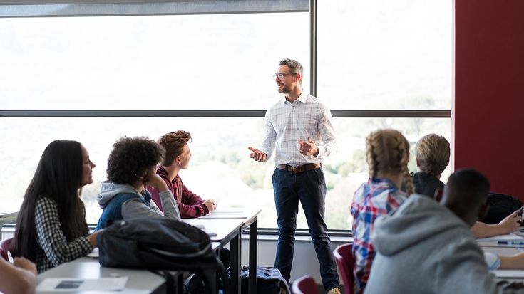

Bridging the Gap : Innovations and Challenges in Social Sciences,
Teaching & Education, Engineering and Technology
22-23 January 2025
Manila, Philippines
Cofworld Education Research and Development Association
About ICSTEET
ICSTEET aims to bring together leading academic scientists, researchers,
and scholars to exchange and share their experiences and research
results. The conference offers an interdisciplinary platform for the
presentation of new advances and research in the fields of Education,
Engineering & Technology, Social Sciences, and Humanities.
Conference Theme
The theme of the conference is "Bridging the Gap: Innovations and
Challenges in Social Sciences, Teaching & Education, Engineering and
Technology". We aim to explore the latest advancements, challenges, and
future directions in these diverse fields, emphasizing the role of
interdisciplinary approaches in addressing global challenges.
HIGHLIGHTS
The Knowledge Convergence - Bridging Disciplines for Innovation
Interdisciplinary Sessions Engage in thought-provoking
sessions that bridge various disciplines and explore their
interconnectedness.
Expert Keynote Speakers Learn from renowned experts who
will share their insights and experiences.
Paper Presentations Present your research findings and
contribute to discussions on a wide range of topics.
Networking Opportunities Connect with peers, researchers,
and industry professionals to build collaborations and partnerships.
Publication Opportunities Selected papers will have the
opportunity to be published in Scopus indexed journals.
Submission Guidelines
Early bird registration deadline 20 Aug 2024
Abstract submission deadline 01 Sep 2024
Full paper submission deadline 20 Sep 2024
Notification of acceptance 30 Sep 2024
Call for Papers/ Session and Tracks
We invite researchers, academicians and professionals to submit their
papers. Topics of interest include, but are not limited to:
Session 1 Emerging Technologies & Education
Educational Technology
Innovative Teaching Methods
E-Learning Initiatives
Adaptation to New Technologies
Online Classroom
Interactive Whiteboard
Blended Learning
Advanced Classroom Technologies
Online/Virtual Laboratories
Plagiarism Technologies
Managed Learning Environments (MLEs)
Learning Management Systems (LMS)
Intelligent Tutoring Systems (ITS)
Virtual education research
Collaborative Virtual Environments (CVEs)
Virtual Learning
Session 2 New Trends & Modern Approaches
Innovative Teaching Models
Creative Teaching Methods
Alternative Ways of Teaching
Team Teaching & Interdisciplinary Integration
Innovations in Education Raising Scientific Literacy
Multilingualism
English as a foreign language (EFL)
English as a second language (ESL)
Informal Learning
Life-Long Learning
Employability Issues
Brain & Learning
Music Education
Arts Education
Collaborative & Problem-Based Learning
Game-Based Learning
Active & Experiential Learning
Creativity
Critical Thinking & Problem Solving
Language Learning Innovations
Pedagogical Innovations
STEM Education
Session 3 Education & Industry Co-operation
Skill Needs of Labour Market
Career Counselling
Internship Programmes
University Start-Ups
Workplace Learning
Employability
Entrepreneurship Education
University-Industry-Government Partnership
Patents & Technology Transfer
Session 4 Education & International Cooperation
Exchange Programmes
Erasmus + Programme Experiences
The Bologna Process & ECTS Experiences
International Projects
Joint Education & Research Programmes
University Networks
Funding Programmes
Bilingual Education

Session 5 Teaching - Learning Relationship
Student -Teacher Relationship
Teacher Role in Learning Process
Education & Counselling
Science & Technology Education
Student Support
Language Education
Health & Sports Education
Extra-Curricular Activities
Quality and Standards in Educational Curriculum & Pedagogy
Facilitation Programs
Mentorship & Professional Guide
Multicultural & Intercultural Communications
Session 6 Sociology and Anthropology
Applied anthropology
Archaeology
Aerospace Engineering
Artificial Intelligence and Machine Learning
Bioengineering
Civil and Structural Engineering
Cloud computing and cybersecurity
Data Science and Big Data Analytics
Environmental Engineering
Internet of Things (IoT)
Industrial Engineering
Material Science and Engineering
Mechanical Engineering
Nanotechnology
Robotics and Automation
Sustainable Energy
Smart Grid Technologies
Paper Publication Opportunity
The International Conference on Social Sciences, Teaching & Education,
Engineering and Technology provides several publication opportunities
for presented work.
Conference Proceedings
All accepted and registered abstracts will be published in the
Conference Proceedings with an ISBN Number.
Journal Publication
There is an opportunity to publish your paper in various Web of
Science, Scopus and other internationally indexed journals,
increasing the visibility and impact of your research.
Session Speakers
Session Chair
Conference Scientific Committee
Plagiarism Policy & Publication Ethics
The International Conference on Social Sciences, Teaching & Education,
Engineering and Technology (ICSTEET) adheres to stringent
anti-plagiarism policies. Here are the key points about their process.
Plagiarism Check
Every submission undergoes a plagiarism check using Crossref
Similarity Check, which is powered by iThenticate.
This ensures that all articles submitted to the conference are
original and free from plagiarism.
Review Process
Submissions that pass the plagiarism check are sent to the
scientific committee for review.
Any submission found to be plagiarized at any stage will be
automatically rejected.